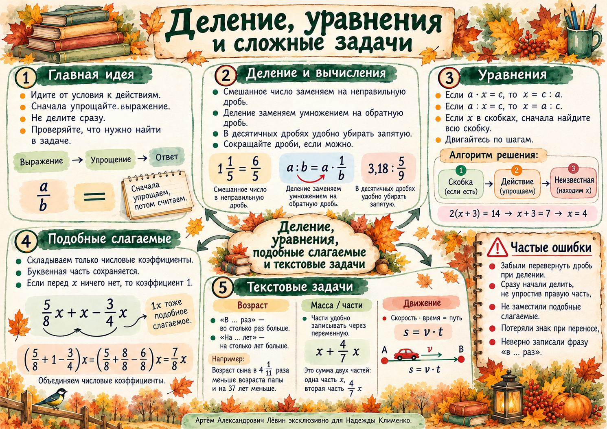

01 / Вычисления
Деление дробей
Степень и скобки, затем умножение и деление, затем сложение и вычитание. При равноправных действиях двигайтесь слева направо.
Смешанное число
Перед умножением или возведением в степень переведите его в неправильную дробь.
Деление на дробь
Умножьте на обратную дробь. Делитель должен быть отличен от нуля.
Десятичные дроби
Частное не изменится, если умножить делимое и делитель на одно и то же ненулевое число.
Смешанные вычисления
Иногда десятичная запись сокращает путь к результату.
Показать полный разбор вычисления
- 1 1/5 = 6/5, а (6/5)² = 36/25 = 1,44.
- 1,44 − 1,08 = 0,36.
- 0,36 : 0,03 = 36 : 3 = 12.
Проверка: 12 · 0,03 = 0,36.
02 / Обратные действия
Как найти неизвестную
Распознайте роль неизвестного: множитель, делитель, слагаемое или вычитаемое. После упрощения примените обратное действие.
Неизвестный множитель
Пример: (2/7)x = 1 1/7, значит x = (8/7) : (2/7) = 4.
Неизвестный делитель
При этом a ≠ 0, c ≠ 0, x ≠ 0.
Неизвестное слагаемое
Пример: (4/9)b + 3/7 = 1 → (4/9)b = 4/7 → b = 9/7.
Неизвестное вычитаемое
В уравнении (3/5)n = 2 7/10 − 3/5 сначала вычислите правую часть. Получится n = 3 1/2.
Проверка: подставьте найденное число в исходное уравнение. Одинаковые значения левой и правой частей подтверждают результат.
03 / Буквенные выражения
Приведение подобных слагаемых
У подобных слагаемых одинаковая буквенная часть. Складываются или вычитаются коэффициенты; буква остаётся прежней. Если перед x нет числа, коэффициент равен 1.
Два слагаемых
(5/9)x = 55/18, следовательно, x = 5 1/2.
Три слагаемых
(5/8 + 8/8 − 6/8)x = (7/8)x, поэтому x = 2.
Частая ошибка: остановиться после приведения подобных на записи (7/8)x = 7/4. Нужно ещё разделить обе части на 7/8 и найти x.
04 / Пошаговый метод
Составное уравнение
Считайте скобку одним неизвестным множителем. Найдите её значение; затем неизвестное слагаемое внутри скобки; после этого — саму переменную.
Три последовательных шага
Шаг 1 из 3
Важный знак: если a − b = c, то a = c + b. После решения проверьте результат подстановкой.
Ещё один пример: неизвестный делитель
x = (12/7) : (3/7) = 4.
05 / Математическая модель
От слов к уравнению
«На d больше» означает сложение: A = B + d. «В k раз больше» означает умножение: A = kB. Две записи одной величины можно приравнять.
Возраст
Мать старше дочери в 4 4/11 раза и на 37 лет.
(37/11)y = 37 → y = 11. Матери 48 лет.
Два арбуза
Общая масса 13 3/4 кг; меньший составляет 4/7 массы большего.
Больший арбуз 8 3/4 кг, меньший — 5 кг.
Порядок решения
- Выберите неизвестную.
- Выразите другие величины.
- Составьте и решите уравнение.
- Проверьте оба условия задачи.
06 / Скорость, время, путь
Задача на догонку
Велосипедист успел уехать на 25 5/6 км. Мотоциклист догнал его через 2/3 часа. Скорость велосипедиста — 3/8 скорости мотоциклиста.
Обозначения
Пусть скорость мотоциклиста равна v км/ч, тогда велосипедиста — (3/8)v км/ч.
Путь каждого за время t вычисляется по формуле S = vt.
Уравнение догонки
После упрощения: 155/6 = (5/12)v, поэтому v = 62 км/ч, а скорость велосипедиста — 23 1/4 км/ч.
Как проверить найденные скорости
Мотоциклист: 62 · 2/3 = 41 1/3 км. Велосипедист за те же 2/3 часа: 23 1/4 · 2/3 = 15 1/2 км. Разность путей составляет 25 5/6 км — первоначальный отрыв.
07 / Путь А
Тренировка: 10 заданий
От базовых действий до текстовых задач. Сначала решайте на бумаге, затем раскройте ответ. Исходные условия совпадают с печатным чек-листом.
1. Вычислите: ( (1 1/4)² − 0,8125 ) : 0,25.
Ответ: 3.
2. Вычислите: 8 : 0,16 − 12 1/2 · 0,64.
Ответ: 42.
3. Решите: (3/5)x = 2 1/10.
Ответ: x = 3 1/2.
4. Решите: (5/7) : y = (3/8) : 3.
Ответ: y = 5 5/7.
5. Решите: (2/9)z + (5/9)z = 2 1/3.
Ответ: z = 3.
6. Решите: (7/8)t + t − (1/2)t = 2 3/4.
Ответ: t = 2.
7. Решите: 1 1/2 · ( (2/3)n + 1/6 ) = 2 1/4.
Ответ: n = 2.
8. Мать старше сына в 3 1/2 раза, или на 30 лет. Сколько лет каждому?
Ответ: сыну 12 лет, матери 42 года.
9. Две дыни весят 18 кг. Одна составляет 2/7 массы другой. Найдите обе массы.
Ответ: 4 кг и 14 кг.
10. Велосипедист отъехал на 18 км. Мотоциклист догнал его через 3/4 часа; скорость велосипедиста — 2/5 скорости мотоциклиста. Найдите скорости.
Ответ: мотоциклист — 40 км/ч, велосипедист — 16 км/ч.
08 / Самопроверка
Перед тем как закончить
Отметьте только то, что можете объяснить самостоятельно. Отметки сохраняются на этом устройстве и никак не меняют диагностическую карту.
0 из 8 пунктов
